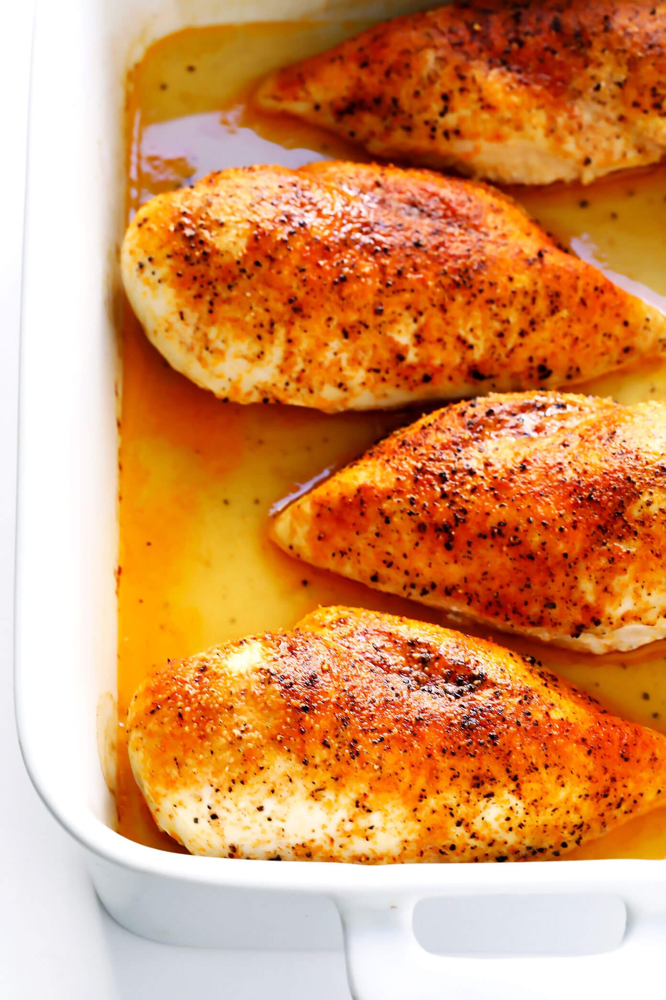

Baked Chicken Breasts Recipe
Baked Chicken Breasts

Learn how to bake chicken that's tender, juicy, and perfect every time with this simple, 5-ingredient recipe for boneless, skinless chicken breasts. Adding just a bit of chicken broth to those beautiful pan drippings creates a tasty pan sauce that adds extra flavor at the table.
Ingredients
Chicken
- Chicken Breasts
- Olive Oil
- Creole Seasoning
- Salt
- Chciken Broth
Directions
- Season Chicken - Coat the chicken breasts with olive oil, then sprinkle both sides with salt and Creole seasoning.
- Bake Chicken - Place the seasoned chicken in a broiler pan. Bake in an oven for about 10 minutes, then flip and continue to bake for about 15 more minutes (or until the juices run clear). When the chicken is done baking, transfer it to a plate.
- Finish with Pan Sauce - Pour the chicken broth into the pan you used to bake the chicken. Scrape any browned bits off the side with a spatula. Drizzle the pan sauce over the baked chicken before serving.